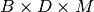
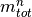
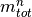
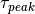
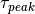

lib_dd.conductivity package¶
Submodules¶
lib_dd.conductivity.model module¶
Template class for models
-
class
lib_dd.conductivity.model.dd_conductivity(settings)¶ Bases:
lib_dd.plot_stats._plot_stats,lib_dd.base_class.integrated_parameters,lib_dd.starting_parameters.starting_parameters,NDimInv.model_template.model_template-
Jacobian(pars)¶ Return the Jacobian corresponding to the forward response. The Jacobian has the dimensions 
TODO: Check the return dimensions
-
compute_par_stats(pars)¶ For a given parameter set (i.e. a fit result), compute relevant statistical values such as
 , ,
, ,
 ,
,  , 
, This is the way to compute any secondary results based on the fit results.
Store in self.stat_pars = dict()
-
convert_parameters(pars)¶ Convert from linear to the actually used scale
-
convert_pars_back(pars)¶ Convert from log10 to linear
-
forward(pars)¶ Return the forward response in base dimensions
Parameters: pars ([log10(sigma_infty), log10(m_i)]) – Returns: response – imaginary parts Return type: Nx2 array, first axis denotes frequencies, seconds real and
-
get_data_base_dimensions()¶ Returns: - Return a dict with a description of the data base dimensions. In this
- case we have frequencies and re/im data
-
get_data_base_size()¶ Usually you do not need to modify this.
-
get_model_base_dimensions()¶ Return a dict with a description of the model base dimensions. In this case we have one dimension: the DD parameters (rho0, mi) where m_i denotes all chargeability values corresponding to the relaxation times.
-
set_settings(settings)¶ Set the settings and call necessary functions
-